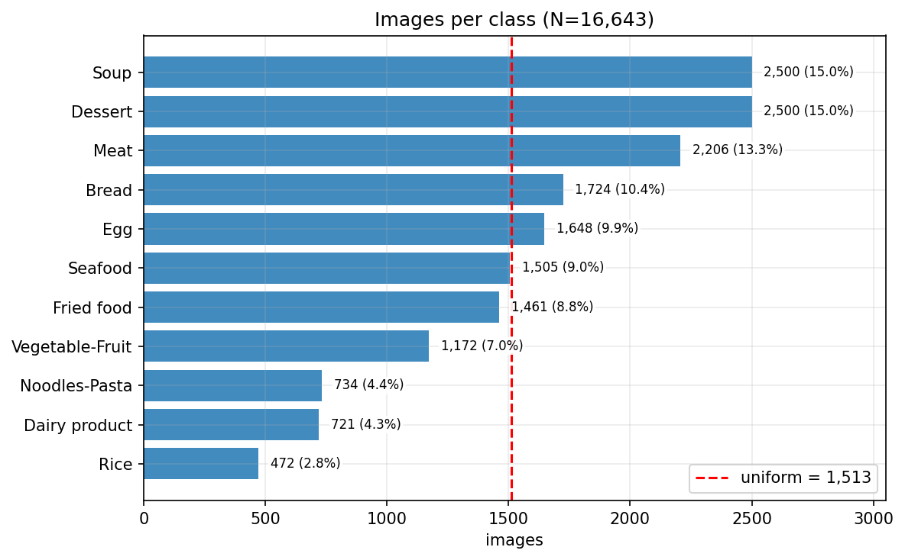
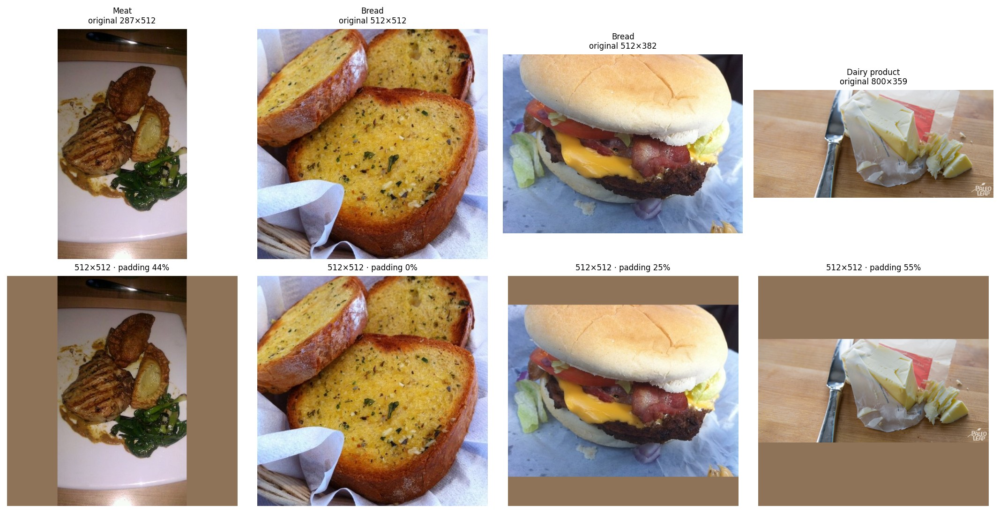
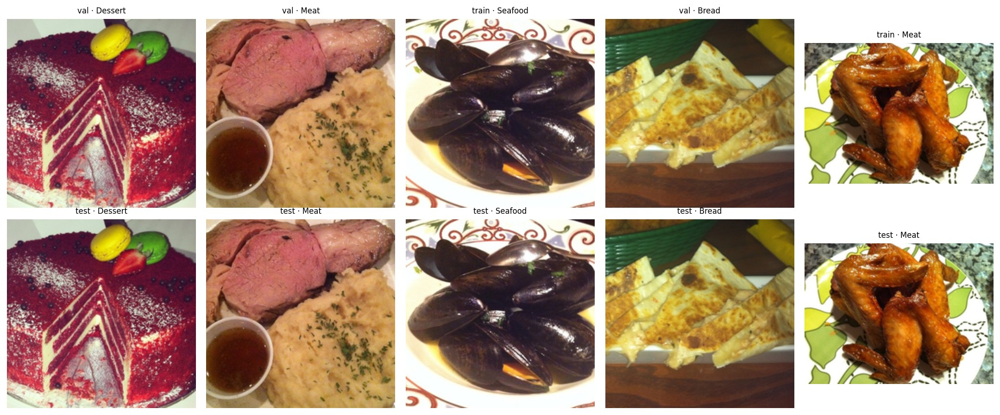
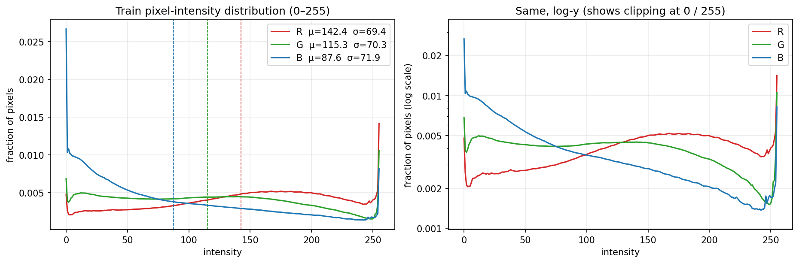
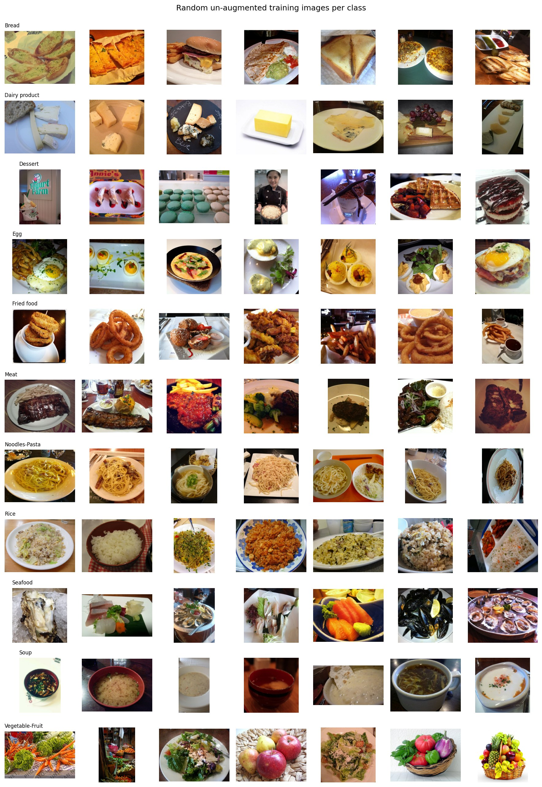
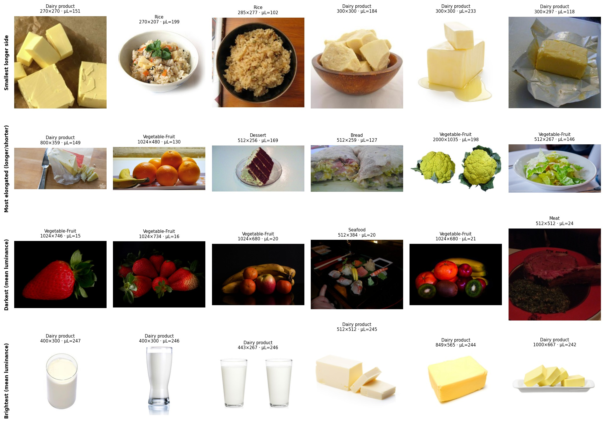
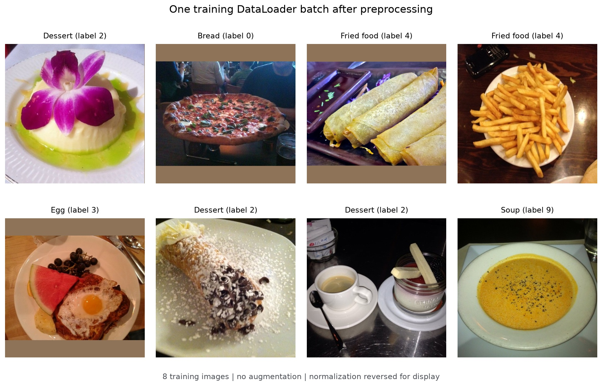

Assignment 2
Deep Learning on Large-Scale Data and Specialized Tasks
Deep Learning on Large-Scale Data for Specialized Computer Vision or Language Tasks
Instructor
Lê Thành Sách
Group members
Hoàng Xuân Bách · Nguyễn Việt Hùng · Lê Nguyễn Gia Phúc
Problem statement
Dataset description and EDA
Dataset description
Source, task and license
Original source and version. Food-11 was released by the Multimedia Signal Processing Group (MMSPG) at EPFL and introduced by Singla, Yuan and Ebrahimi (2016) in Food/Non-Food Image Classification and Food Categorization Using Pre-Trained GoogLeNet Model. This project uses the Kaggle mirror maintained by trolukovich; the EDA notebook pins its automatic download to version 1. EPFL is the original dataset source.
Collection and category design. Section 4.2 of the original paper describes categories adapted from major USDA food groups. Images were mainly collected from Food-101, UEC-FOOD-100 and UEC-FOOD-256, with additional Flickr and Instagram images for Dairy product and Vegetable-Fruit. The authors included varied food items within each category and selected images whose main content belonged to that category.
Task and annotations. The task is supervised, single-label classification: given one RGB food photograph, predict one of 11 broad food categories. The prediction unit is one image. In the Kaggle distribution used here, labels come from class folders and are mapped to integer IDs 0–10 as listed in Table 2. A mixed dish still receives one supplied category label. The group preserves the provided annotations and official training, validation and evaluation partitions without manual relabeling or duplicate removal.
License and use. The EPFL conditions of use permit use, copying, modification and distribution of the dataset and its documentation for research purposes only and prohibit commercial distribution. This project uses Food-11 for academic coursework and research under those published conditions.
Format, counts and size
| Property | Value |
|---|---|
| Dataset version | Version 1 of the Kaggle distribution; original Food-11 release by EPFL |
| Total samples | 16,643 (train 9,866; validation 3,430; evaluation/test 3,347) |
| Classes | 11 food categories; one integer label per image |
| Raw format | JPEG, RGB, uint8 in [0, 255] |
| Model input | float32 tensor, 3 × 512 × 512 after resize, padding and normalization |
| Size on disk | ≈ 1,133 MiB (median 48 KiB; largest 9.6 MiB; 1 KiB = 1,024 bytes) |
| License | EPFL MMSPG: use for research purposes only |
Table 1 - Food-11 overview
Table 2 gives class counts by split; Figure 1 compares total counts by class. Dessert and Soup are the largest classes; Rice is the smallest. The largest-to-smallest ratio is 5.36 in train and 5.30 overall, so accuracy should be read alongside macro-F1 and per-class recall.
| Label | Class | Train | Val | Test | Total | Share |
|---|---|---|---|---|---|---|
| 0 | Bread | 994 | 362 | 368 | 1,724 | 10.4% |
| 1 | Dairy product | 429 | 144 | 148 | 721 | 4.3% |
| 2 | Dessert | 1,500 | 500 | 500 | 2,500 | 15.0% |
| 3 | Egg | 986 | 327 | 335 | 1,648 | 9.9% |
| 4 | Fried food | 848 | 326 | 287 | 1,461 | 8.8% |
| 5 | Meat | 1,325 | 449 | 432 | 2,206 | 13.3% |
| 6 | Noodles-Pasta | 440 | 147 | 147 | 734 | 4.4% |
| 7 | Rice | 280 | 96 | 96 | 472 | 2.8% |
| 8 | Seafood | 855 | 347 | 303 | 1,505 | 9.0% |
| 9 | Soup | 1,500 | 500 | 500 | 2,500 | 15.0% |
| 10 | Vegetable-Fruit | 709 | 232 | 231 | 1,172 | 7.0% |
| All classes | 9,866 | 3,430 | 3,347 | 16,643 | 100.0% |
Table 2 - Official sample counts by class and split
Bias and limitations
- Classes are imbalanced, with fewer examples for Rice, Dairy product and Noodles-Pasta.
- Each image has one label; representative sample inspection includes composite plates and images that appear off-topic.
- Photographic style differs by class and repeated images occur across the official splits; both can affect evaluation.
Exploratory data analysis (EDA)
The EDA scans all files in the official release. File integrity and original image dimensions are audited before preprocessing. Pixel statistics are computed after longer-side resize to 512 px, with padding excluded; normalization statistics are fitted on the training split only.
Data integrity and splitting
All 16,643 files decode as RGB JPEGs; no file is empty, unreadable or inconsistent with its extension. The same 11 class folders appear in all three official splits. Of 1,887 files with a non-default EXIF orientation tag, 1,884 have the invalid value 0 and only three have a real 90° rotation; images are read as stored.
The official 59.3% / 20.6% / 20.1% training/validation/evaluation (test) split is retained. All 16,643 images are used; the group does not create a custom split or select a subset. The split unit is an individual image. No project-level random seed or stratification applies because the group does not resplit the data; the EPFL download page lists the three partitions but does not state the original split seed or whether the split was stratified.
Exact copies across the published splits mean image-level splitting does not eliminate leakage. Class proportions are similar across splits (χ² test p = 0.806; Cramér's V = 0.021).
Class distribution

An always-Dessert predictor reaches 0.146 accuracy but only 0.023 macro-F1 on validation. This is why macro-F1 and per-class recall should be read alongside accuracy.
Input size and aspect ratio
There are 825 distinct image shapes; the longer side ranges from 270 to 9,542 px, with a median of 512 px. Table 3 summarizes resizing and padding by split. The aspect-ratio groups in Table 4 show why padding is concentrated in non-square images. Figure 2 illustrates the transformation.
| Split | Upsampled (%) | Longer side = 512 (%) | Downsampled (%) | Needs padding (%) | Mean padding (%) | Max padding (%) |
|---|---|---|---|---|---|---|
| train | 2.4 | 92.1 | 5.5 | 43.6 | 11.7 | 55.1 |
| val | 1.6 | 93.2 | 5.2 | 38.0 | 10.3 | 61.7 |
| test | 2.0 | 91.7 | 6.3 | 40.5 | 10.9 | 47.5 |
| all | 2.1 | 92.2 | 5.6 | 41.8 | 11.3 | 61.7 |
Table 3 - Resize and padding statistics by split (percentages rounded independently)
| Aspect-ratio group (longer / shorter) | Images | Share (%) | Mean padding (%) |
|---|---|---|---|
| 1:1 | 9,683 | 58.2 | 0.0 |
| 1.00–1.32 | 536 | 3.2 | 8.3 |
| ≈4:3 (1.32–1.34) | 3,759 | 22.6 | 25.0 |
| 1.34–1.45 | 959 | 5.8 | 25.8 |
| ≈3:2 (1.45–1.55) | 845 | 5.1 | 33.4 |
| 1.55–1.85 (5:3, 16:9) | 841 | 5.0 | 41.7 |
| >1.85 | 20 | 0.1 | 49.6 |
Table 4 - Aspect ratio and resulting padding

Duplicates and split leakage
Exact duplicates have identical file bytes; matching 64-bit dHashes mark possible near-duplicates that need visual review. Table 5 summarizes pairwise overlap; Table 5b breaks exact-copy overlap down by test class. The official split is retained; report results on the full test set and on the 2,787 images without a byte-identical train/validation copy.
| Split pair | Byte-identical files (MD5) | Shared dHashes |
|---|---|---|
| train–val | 51 | 58 |
| train–test | 249 | 254 |
| val–test | 311 | 314 |
Table 5 - Pairwise duplicate audit (dHash counts include byte-identical pairs)
| Class | Test images | Exact copy in train/validation | Rate (%) | Test images without exact train/validation copy |
|---|---|---|---|---|
| Bread | 368 | 100 | 27.2 | 268 |
| Dairy product | 148 | 0 | 0.0 | 148 |
| Dessert | 500 | 60 | 12.0 | 440 |
| Egg | 335 | 5 | 1.5 | 330 |
| Fried food | 287 | 66 | 23.0 | 221 |
| Meat | 432 | 109 | 25.2 | 323 |
| Noodles-Pasta | 147 | 0 | 0.0 | 147 |
| Rice | 96 | 0 | 0.0 | 96 |
| Seafood | 303 | 100 | 33.0 | 203 |
| Soup | 500 | 116 | 23.2 | 384 |
| Vegetable-Fruit | 231 | 4 | 1.7 | 227 |
| All | 3,347 | 560 | 16.7 | 2,787 |
Table 5b - Test images with a byte-identical copy in train or validation, by class
Of 568 test images sharing a dHash with train or validation, 560 are byte-identical and eight are dHash-only candidates: six in Rice and two in Vegetable-Fruit. dHash matches are possible near-duplicates, not confirmed duplicates.

Seafood has the highest exact-copy rate (33.0%). Dessert also has 60 affected test images (12.0%). Dairy product, Noodles-Pasta and Rice have no byte-identical test copies in train or validation.
Additional byte-identical copies within the same split are 5 in train, 3 in validation and 4 in test; these copies are retained. In addition, 51 validation images are byte-identical to images in train, so validation-based checkpoint selection and early stopping could be optimistic for those examples. This is a limitation of the provided split.
Input size versus class
Table 6 shows that longer side, file size and bits per pixel carry the strongest class signal. The effect-size labels use rule-of-thumb thresholds: ε² < 0.01 negligible, < 0.06 small, < 0.14 moderate and ≥ 0.14 large. The metadata-only random forest reaches 0.251 accuracy and 0.193 macro-F1 on validation, above the majority-class baseline (0.146 and 0.023). Vegetable-Fruit is the clearest size outlier, so its results should be interpreted with care.
| Size feature | All 11 classes | Without Vegetable-Fruit |
|---|---|---|
| Longer side | 0.184 (large) | 0.046 (small) |
| Shorter side | 0.045 (small) | 0.013 (small) |
| Aspect ratio | 0.046 (small) | 0.014 (small) |
| File size | 0.166 (large) | 0.087 (moderate) |
| Bits per pixel | 0.161 (large) | 0.118 (moderate) |
Table 6 - Effect size of class on image-size features (ε²)
Pixel intensity
Table 7 reports the training-set RGB statistics used for normalization, computed after resize with padding excluded. Food-11 is warmer and has a wider pixel spread than the ImageNet reference. Figure 4 shows the channel distributions.
| Channel | Train mean | Train std | ImageNet mean | ImageNet std |
|---|---|---|---|---|
| R | 0.5586 | 0.2722 | 0.485 | 0.229 |
| G | 0.4520 | 0.2755 | 0.456 | 0.224 |
| B | 0.3434 | 0.2821 | 0.406 | 0.225 |
Table 7 - Training-set RGB statistics and ImageNet reference

Sample inspection
The samples in Figure 5 show broad within-class variety, composite dishes assigned one class label, examples that appear off-topic and visually similar classes such as Noodles-Pasta/Soup and Meat/Egg/Fried food. These qualitative observations motivate hypotheses for later error analysis; their prevalence has not been quantified.

Figure 6 highlights unusual image sizes and brightness, which reflect photographic-style differences across categories.

Data preprocessing
For model input, images are decoded as stored, converted to RGB, resized with Lanczos so the longer side is 512 px and centre-padded with the rounded training mean (142, 115, 88). Values are scaled to [0, 1] and standardized with the training-only means and standard deviations in Table 7. Each image produces a float32 tensor with shape [3, 512, 512]; a batch has shape [B, 3, 512, 512]. The EDA uses no augmentation; any training-time augmentation belongs to the model-training protocol and is not assessed here.
Example batch after preprocessing. Figure 7 shows an actual PyTorch DataLoader batch of eight training images sampled without replacement for illustration (seed 42). The batch uses the pipeline above with no augmentation. Its recorded output is:
images: shape [8, 3, 512, 512], dtype torch.float32 labels: shape [8], dtype torch.int64 label IDs: [2, 0, 4, 4, 3, 2, 2, 9]

Methodology
Pipeline overview
The classification pipeline follows a strict, end-to-end sequential workflow across all experiments on the Food-11 dataset:
-
Raw data & Split Preservation: The official
Food-11 partitions (
9,866training,3,430validation, and3,347evaluation/test RGB images across 11 food categories) are preserved without re-splitting or automatic deletion. An automated MD5 and 64-bit difference hash (dHash) audit logs exact and near-duplicates across splits to transparently document potential data leakage risk. -
Aspect-Preserving Preprocessing & Train-Only
Normalization:
Each image is decoded in RGB and its longer side is resized to
512pixels via Lanczos interpolation while preserving aspect ratio. Channel-wise RGB mean and population standard deviation (ddof=0) are fitted once exclusively on resized, unaugmented training image pixels (excluding synthetic padding) and cached intrain_normalization.json. Images are then centrally padded to512 × 512using the rounded training-mean RGB values and standardized via(x - train_mean) / train_std. Training images additionally undergo random horizontal flipping and color jitter (brightness=0.3, contrast=0.3, saturation=0.3, hue=0.05) prior to resizing and padding. -
Data Loader: Custom PyTorch
DataLoaderinstances group tensors of shape(B, 3, 512, 512)withbatch_size = 32anddrop_last = False. Training uses seeded random shuffling (torch.Generator().manual_seed(seed)and deterministicseed_worker), while validation and test loaders evaluate deterministically in fixed order. -
Model, Loss & Optimization: A custom 4-stage
scratch baseline (
SimpleCNN) and four transfer-learning configurations (ResNet-18andResNet-50under both frozen-backbone linear probing and full end-to-end fine-tuning) map inputs to 11 class logits. Models are trained with label-smoothed Cross-Entropy Loss (label_smoothing = 0.1), optimized viaAdamWwith discriminative learning rates, 1-epoch linear warmup + cosine annealing, gradient norm clipping (1.0), and Automatic Mixed Precision (AMP). -
Prediction, Post-processing & Evaluation:
Forward logits are converted in FP32 to class probabilities via
softmax and class decisions via
argmax. Post-processing includes Expected Calibration Error (ECE, 10 bins) and Grad-CAM visual attribution onlayer4[-1]. Dual validation checkpoints (best validationmacro_f1and best validationaccuracy) are tracked and evaluated across three independent seeds ([42, 43, 44]), accompanied by paired seed differences, 1,000-iteration bootstrap 95% CIs, and exact McNemar tests.
Baseline and main methods
| # | Model / Variant | Architecture | Input representation | Loss | Metrics | Strengths & limits | Params (Total / Trainable) | Library vs. Self-implemented |
|---|---|---|---|---|---|---|---|---|
| 1 |
SimpleCNN (Scratch Baseline) |
Custom 9-conv-layer network trained from random
initialization: • Stem: Conv2d(3, 32, 3, stride=2, pad=1, bias=False) →
BN → ReLU (512→256)• 4 Stages with widths (32, 64, 128, 256): each stage has two
[Conv2d(3×3, pad=1, bias=False) → BN → ReLU]
blocks followed by
MaxPool2d(2) (256→128→64→32→16)• Head: AdaptiveAvgPool2d(1) →
Flatten() → Dropout(0.3) →
Linear(256, 11).
|
Aspect-preserved, padded & train-normalized 3D RGB
tensor X ∈ ℝ^{B×3×512×512}
|
nn.CrossEntropyLoss with
label_smoothing=0.1
|
• Primary: Macro-F1, Macro-Precision,
Macro-Recall • Secondary: Top-1 Accuracy, Test Loss, ECE • Class-level: Per-class P/R/F1, Confusion Matrix • Efficiency: GFLOPs, Train time (min), Peak VRAM (MiB), Latency (bs=1), Throughput (bs=32) |
Strengths: Compact (~1.19M params), fast
forward pass, zero external pretraining dependency, clean
spatial inductive bias benchmark. Limits: Lacks residual skip connections; limited depth and receptive field struggle with high intra-class food variation when trained from scratch on 9,866 images. |
1,185,323 Trainable: 1,185,323 (100%) |
Self-implemented: Complete
SimpleCNN class, stem + 4-stage generator loop,
custom head.Library: torch.nn.Conv2d,
BatchNorm2d, ReLU,
MaxPool2d, AdaptiveAvgPool2d,
Dropout, Linear.
|
| 2 |
ResNet-18 (Frozen) (Ablation / Linear Probe) |
Pretrained torchvision.models.resnet18 (IMAGENET1K_V1
weights):• Backbone (Frozen): 7×7 conv stride-2 + maxpool stem, 4 residual stages of 2 basic blocks each (widths 64, 128, 256, 512). All weights frozen
(requires_grad=False) and
BatchNorm2d locked in
eval() mode.• Head (Trainable): Sequential(Dropout(0.3), Linear(512, 11)).
|
3D RGB tensor X ∈ ℝ^{B×3×512×512} |
nn.CrossEntropyLoss(label_smoothing=0.1) |
Same primary, secondary, class-level, and efficiency metrics across 3 seeds + dual checkpoints |
Strengths: Ultra-low trainable parameter
count (5,643); rapid convergence; minimal backward-pass
memory; isolates off-the-shelf ImageNet feature quality. Limits: Cannot adapt convolutional filters or BatchNorm statistics to fine-grained culinary textures and domain-specific lighting. |
11,182,155 Trainable: 5,643 (0.05%) |
Self-implemented: Head replacement wrapper,
split-mode set_mode() locking backbone BN in
eval().Library: torchvision.models.resnet18
(IMAGENET1K_V1).
|
| 3 |
ResNet-18 (Full Fine-Tuning) (Controlled Study) |
Same ResNet-18 (IMAGENET1K_V1)
architecture and
Dropout(0.3) → Linear(512, 11) head, but
all backbone residual blocks, BatchNorm
layers, and classification head are unfrozen and jointly
optimized end-to-end with discriminative learning rates
(lr_backbone=1e-4, lr_head=1e-3).
|
3D RGB tensor X ∈ ℝ^{B×3×512×512} |
nn.CrossEntropyLoss(label_smoothing=0.1) |
Same primary, secondary, class-level, and efficiency metrics across 3 seeds + dual checkpoints |
Strengths: Adapts multi-scale residual
representations specifically to Food-11 categories while
maintaining moderate compute cost (~11.18M params). Limits: Higher training time and VRAM than frozen probing; shallower 2-conv basic blocks have lower representational ceiling than bottleneck architectures. |
11,182,155 Trainable: 11,182,155 (100%) |
Self-implemented: Parameter-group splitter
(make_optimizer) for differential backbone/head
learning rates.Library: torchvision.models.resnet18,
torch.optim.AdamW.
|
| 4 |
ResNet-50 (Frozen) (Ablation / Linear Probe) |
Pretrained torchvision.models.resnet50 (IMAGENET1K_V2
weights):• Backbone (Frozen): 4 residual stages with (3, 4, 6, 3) bottleneck blocks (1×1 → 3×3 → 1×1
convs, expansion factor 4, output channels
256, 512, 1024, 2048). Locked in
eval() mode.• Head (Trainable): Sequential(Dropout(0.3), Linear(2048, 11)).
|
3D RGB tensor X ∈ ℝ^{B×3×512×512} |
nn.CrossEntropyLoss(label_smoothing=0.1) |
Same primary, secondary, class-level, and efficiency metrics across 3 seeds + dual checkpoints |
Strengths: Leverages rich 2,048-dim
high-level semantic features from TorchVision's upgraded V2
recipe while training only 22,539 parameters. Limits: High forward-pass FLOPs at 512×512 resolution despite frozen weights; linear head alone cannot resolve subtle cross-class food overlaps. |
23,530,571 Trainable: 22,539 (0.10%) |
Self-implemented: Head replacement wrapper
and frozen BN enforcement. Library: torchvision.models.resnet50
(IMAGENET1K_V2).
|
| 5 |
ResNet-50 (Full Fine-Tuning) ★ Primary Model |
Deep 50-layer bottleneck architecture initialized with
IMAGENET1K_V2 weights and custom
Dropout(0.3) → Linear(2048, 11) head. Entire
network (23,530,571 parameters) is fine-tuned
end-to-end using discriminative AdamW
(lr_backbone=1e-4, lr_head=1e-3)
and cosine decay.
|
3D RGB tensor X ∈ ℝ^{B×3×512×512} |
nn.CrossEntropyLoss(label_smoothing=0.1) |
Same primary, secondary, class-level, and efficiency metrics + Grad-CAM visual attribution & ECE calibration |
Strengths: Highest representational
capacity and hierarchical receptive field; adapts deep
bottleneck filters to complex food compositions, garnish
details, and plating. Limits: Largest memory footprint and longest per-epoch training time at 512×512 resolution; requires careful regularization to prevent overfitting. |
23,530,571 Trainable: 23,530,571 (100%) |
Self-implemented: End-to-end differential
fine-tuning loop, dual-best checkpoint manager, custom
Grad-CAM hooks. Library: torchvision.models.resnet50
(IMAGENET1K_V2), PyTorch AMP & autograd.
|
Experimental setup
To ensure strict experimental fairness and reproducibility across all 15 core training runs (5 model configurations × 3 random seeds), a unified training protocol and predeclared experimental design were enforced.
1. Standardized training setup & hyperparameters
| # | Setup / Hyperparameter | Value / Policy | Design Rationale & Protocol Notes |
|---|---|---|---|
| 1 | Optimizer |
torch.optim.AdamW (weight_decay = 0.01)
|
Decoupled weight decay regularizes high-capacity backbones effectively during transfer learning and scratch training alike. |
| 2 | Learning rate |
• Classifier head / Scratch:
lr_head = 1e-3• Pretrained backbone: lr_backbone = 1e-4
|
Discriminative learning rates allow the randomly initialized classification head to adapt quickly while preventing catastrophic forgetting in pretrained ImageNet weights. |
| 3 | Batch size & Input |
batch_size = 32 at
512 × 512 resolution
|
Consistent across train, validation, and test loaders (drop_last = False). Aspect-preserving Lanczos resize + center train-mean RGB
padding preserves food geometry.
|
| 4 | Epochs |
Up to 100 epochs (EP_SCRATCH = 100, EP_FT = 100)
|
Matched maximum epoch budget across all five configurations, bounded by dual-criterion early stopping. |
| 5 | Scheduler |
LambdaLR: 1-epoch linear warmup → cosine
annealing (min_ratio = 0.01)
|
Stepped per iteration/batch. Warmup stabilizes early gradients in the new linear head before smooth cosine decay to 1% of peak LR. |
| 6 | Regularization & Augmentation |
• Loss: Cross-Entropy with
label_smoothing = 0.1• Head: Dropout(p = 0.3)• Gradients: Global L2 norm clipping at 1.0• Train Aug: RandomHorizontalFlip(0.5) +
ColorJitter(0.3, 0.3, 0.3, 0.05)
|
Mitigates overconfidence on visually ambiguous or noisy web-scraped food labels and improves robustness to lighting/color shifts. |
| 7 | Early stopping |
patience = 10 epochs (shared dual-criterion
counter)
|
Patience resets to 0 whenever
either validation macro_f1 or
validation accuracy improves (ties broken by
lower validation loss). Training stops only when neither
improves for 10 consecutive epochs.
|
| 8 | Checkpoint criterion |
Dual validation checkpoints:
best_macro_f1.pt (primary) &
best_accuracy.pt
|
Both checkpoints are saved independently on validation and
evaluated on the test set in §9. Primary comparisons and
plots strictly use best_macro_f1 to account for
class imbalance.
|
| 9 | Seeds & Repeated runs |
THREE_SEEDS = [42, 43, 44] (3 independent runs
/ config)
|
Seeds control Python, NumPy, PyTorch, CUDA,
cudnn.deterministic=True, and DataLoader
shuffling while keeping the official data split invariant.
Results reported as mean ± sample std (ddof=1).
|
| 10 | Hardware & Environment |
CUDA GPU (Colab / Kaggle environment logged in
environment.json)
|
Full environment provenance, SHA-256 split fingerprint
(SPLIT_SHA), and run signatures verified
automatically before reusing or evaluating checkpoints.
|
| 11 | Mixed precision |
Enabled (AMP_ENABLED = True,
torch.float16 autocast +
GradScaler)
|
Accelerates 512×512 convolutional training and reduces peak VRAM allocation; evaluation loss accumulation is cast back to FP32 for numerical exactness. |
| 12 | Training time & Cost tracking |
Per-epoch & total wall-clock time, Peak GPU VRAM (MiB),
GFLOPs, Latency (bs=1) & Throughput
(bs=32)
|
Measured via time.perf_counter() (including
validation), torch.cuda.max_memory_allocated(),
FlopCounterMode (1 MAC = 2 FLOPs), and
warmed-up CUDA-synchronized synthetic inference benchmarks.
|
| 13 | Hyperparameter selection method | Proposal-locked controlled recipe (no per-model test tuning) | All hyperparameters were fixed a priori in the approved proposal to isolate the effects of pretraining, backbone freezing vs. full fine-tuning, and backbone depth without hyperparameter-search confounding. |
2. Experimental design & controlled comparisons
Every controlled comparison states its predeclared hypothesis, changed factor, fixed factors, evaluation metrics, and decision criterion prior to inspecting test outcomes:
| # | Comparison Study | Reference vs. Alternative | Predeclared Hypothesis | Changed Factor(s) | Fixed Factors | Metrics & Decision Criterion |
|---|---|---|---|---|---|---|
| 1 |
Transfer Learning & Architecture (Baseline vs. Main) |
simple_cnnvs. resnet50_full
|
Deep residual architecture initialized with ImageNet pretraining substantially improves Food-11 test Macro-F1 over a compact CNN trained from scratch, at the cost of higher compute and memory. | Backbone architecture/depth (9-layer SimpleCNN vs. 50-layer bottleneck ResNet) and initialization (random vs. ImageNet-1K V2 + discriminative LR). |
Official Food-11 split, 512×512 aspect-preserving
resize/pad, train-only RGB normalization, augmentation,
AdamW, epoch budget (100), dual-criterion early stopping,
batch size (32), seeds [42, 43, 44].
|
• Primary: Paired Δ Test Macro-F1 across
seeds. • Criterion: Mean paired Δ Macro-F1 ≥ +0.01 (1.0 pp) indicates a
practical gain for alt; report sample std, sign
consistency, seed-42 bootstrap 95% CI, and McNemar
p-value.
|
| 2 |
Backbone Adaptation (Shallow) (Ablation Study 1) |
resnet18_frozenvs. resnet18_full
|
Unfreezing and adapting the ResNet-18 backbone end-to-end yields a practical gain (≥ 1.0 pp) in Food-11 Macro-F1 over a frozen linear probe by specializing convolutional filters to food textures, at higher training cost. |
Backbone parameter trainability (requires_grad)
and BatchNorm2d behavior (locked
eval() vs. active
train() statistics).
|
ResNet-18 architecture, ImageNet-1K V1 initialization,
classifier head (Dropout(0.3) + Linear(512, 11)), data split, 512×512 preprocessing, optimizer/schedule,
batch size, seeds.
|
Same paired multi-seed decision rule (practical threshold
|Δ Macro-F1| ≥ 0.01) + training time and peak
VRAM trade-off analysis.
|
| 3 |
Backbone Adaptation (Deep) (Ablation Study 2) |
resnet50_frozenvs. resnet50_full
|
Full end-to-end fine-tuning of ResNet-50 significantly outperforms a frozen ResNet-50 feature extractor, demonstrating that domain adaptation of deep bottleneck layers is critical for fine-grained food classification. |
Backbone parameter trainability (22.5K vs. 23.53M trainable
params) and BatchNorm2d train/eval mode.
|
ResNet-50 architecture, ImageNet-1K V2 initialization,
classifier head (Dropout(0.3) + Linear(2048, 11)), data split, 512×512 preprocessing, optimizer/schedule,
batch size, seeds.
|
Same paired multi-seed decision rule (practical threshold
|Δ Macro-F1| ≥ 0.01) + training time and peak
VRAM trade-off analysis.
|
| 4 |
Backbone Capacity Scaling (Controlled Study) |
resnet18_fullvs. resnet50_full
|
Scaling from ResNet-18 (basic blocks) to ResNet-50 (bottleneck blocks) under full fine-tuning improves test Macro-F1 by capturing richer hierarchical food features, while increasing GFLOPs and latency. | Backbone architecture/depth (18-layer basic vs. 50-layer bottleneck, 11.18M vs. 23.53M params) and corresponding TorchVision ImageNet weight recipe (V1 vs. V2). |
Full fine-tuning regime (lr_backbone=1e-4,
lr_head=1e-3), official split, 512×512
preprocessing, augmentation, epoch budget, early stopping,
batch size, seeds.
|
Same paired multi-seed decision rule (practical threshold
|Δ Macro-F1| ≥ 0.01) evaluated alongside
GFLOPs, latency, and F1-per-GFLOP efficiency.
|
| 5 |
Data Augmentation Ablation (Optional Protocol) |
resnet50_full_noaugvs. resnet50_full
|
Applying random horizontal flips and color jitter during
training reduces overfitting and improves test
generalization on Food-11 (controlled via
RUN_AUG_ABLATION flag).
|
Presence vs. absence of training-time data augmentation
(RandomHorizontalFlip +
ColorJitter).
|
ResNet-50 architecture, ImageNet-1K V2 weights, full fine-tuning recipe, 512×512 resize/pad & train-only normalization, batch size, seeds. |
Same paired multi-seed decision rule (practical threshold
|Δ Macro-F1| ≥ 0.01) and generalization gap
(train_acc - val_acc) inspection.
|
Results
The analysis covers training curves and convergence behavior, quantitative performance metrics across primary and secondary evaluation criteria, parameter counts, compute costs, and qualitative findings.
1. Training behavior & convergence curves
Training dynamics under the 100-epoch budget and shared dual-criterion early stopping:

Figure 1: Training curves across the five model configurations (SimpleCNN scratch, ResNet-18/50 frozen vs. full fine-tuning) on Food-11 under aspect-preserving 512×512 preprocessing and train-only normalization.
- SimpleCNN (Scratch Baseline): Reached best validation macro-F1 at epoch 59 out of 110.7 minutes total training time, reflecting slower convergence from random initialization without shortcut connections.
- ResNet-18 & ResNet-50 (Frozen Backbones): Exhibited rapid early convergence (best epoch 25 for ResNet-18 frozen, 37 for ResNet-50 frozen) as only the classification head was trained. However, performance plateaued earlier due to frozen feature extractors unable to specialize on culinary nuances.
- ResNet-18 & ResNet-50 (Full Fine-Tuning): Benefited significantly from end-to-end adaptation, with ResNet-50 achieving top performance at epoch 16 while maintaining robust stability through AdamW and cosine decay.
2. Quantitative results & compute cost summary
Proposal primary evaluation (best validation macro-F1 checkpoint selection) and operational compute costs across all evaluated architectures (Seed 42 single-run evaluation):
| # | Experiment | Runs / Seed | Test Accuracy | Test Precision | Test Recall | Test Macro-F1 | Val Macro-F1 | Params (M) | Trainable (M) | GFLOPs | Train Time (min) | Best Epoch | Latency bs=1 (ms) | Throughput (img/s) | Peak GPU Mem (MiB) |
|---|---|---|---|---|---|---|---|---|---|---|---|---|---|---|---|
| 1 | simple_cnn |
1 / 42 | 82.61% | 83.19% | 83.29% | 82.99% | 80.42% | 1.19 | 1.19 | 1.99 | 110.7 | 59.0 | 1.40 ms | 1,035 | 3,139 MiB |
| 2 | resnet18_frozen |
1 / 42 | 84.43% | 85.38% | 84.39% | 84.59% | 82.74% | 11.18 | 0.01 | 4.74 | 55.2 | 25.0 | 3.83 ms | 591 | 1,245 MiB |
| 3 | resnet18_full |
1 / 42 | 91.81% | 91.87% | 92.34% | 92.01% | 91.32% | 11.18 | 11.18 | 4.74 | 39.6 | 13.0 | 3.92 ms | 591 | 3,994 MiB |
| 4 | resnet50_frozen |
1 / 42 | 90.56% | 91.50% | 90.58% | 91.00% | 89.26% | 23.53 | 0.02 | 10.68 | 82.7 | 37.0 | 7.31 ms | 218 | 1,869 MiB |
| 5 |
resnet50_full
★ Best
|
1 / 42 | 94.17% | 94.55% | 94.72% | 94.61% | 93.25% | 23.53 | 23.53 | 10.68 | 67.8 | 16.0 | 6.87 ms | 253 | 14,517 MiB |
Note: Values reflect single-seed evaluation (seed 42). Standard deviations across multiple seeds are currently uninitialized pending full 3-seed aggregation runs.

Figure 2: Accuracy–cost trade-off plots illustrating test Macro-F1 against parameter count (log scale), GFLOPs per image, training time, and batch-size-1 inference latency.
3. Qualitative & visual diagnostics
Inspection of confusion matrices, error categories, and Grad-CAM activations on test images:

Figure 3: Row-normalized confusion matrices for baseline SimpleCNN and main ResNet-50 full model on the Food-11 test split.

Figure 4: Grad-CAM visual attributions on ResNet-50 layer4[-1] showing regions of the food dish driving model classification.
Comparison and discussion
Error analysis
Limitations and conclusion
AI usage - this assignment
Assignment-specific AI Usage Disclosure
Where AI was used
Where AI was NOT used
Links
| Content | Link |
|---|---|
| Source code | GitHub repository |